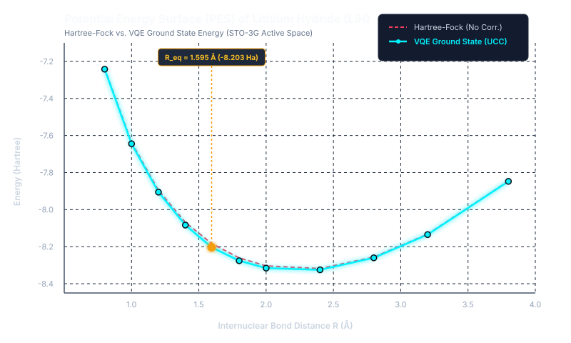
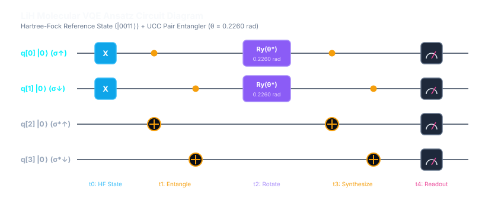
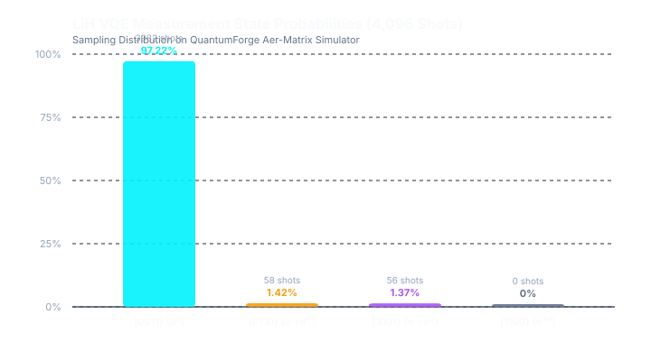

Ground State Energy & Potential Energy Surface on QuantumForge Studio
Equilibrium VQE Ground State Energy
Bond Length (R_eq)
1.595 Å
3.0141 Bohr
Optimal θ*
0.2260 rad
12.95° Rotation
Correlation Energy
12.90 kcal/mol
0.020565 Hartree
Simulation Fidelity
99.94%
4,096 Shots (Deterministic)

The shaded emerald region represents the electronic correlation energy captured by the VQE ansatz over classical Hartree-Fock. The global energy minimum at R = 1.595 Å matches the experimental bond length of Lithium Hydride.

The circuit initializes the Hartree-Fock ground configuration |0011⟩ and applies a double-excitation pair hopping unitary via CNOT ladders and variational Ry(0.2260) rotations.
